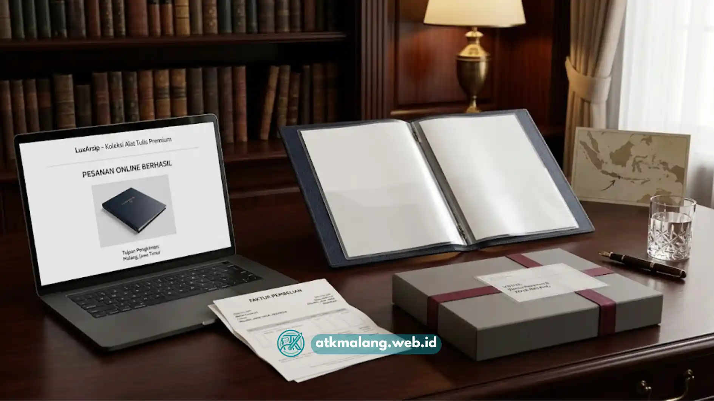

Clear book F4 di Malang umumnya dapat ditemukan di toko alat tulis kantor, toko fotokopi, dan marketplace daring dengan pilihan ukuran dan jumlah lembar yang bervariasi.
- Tersedia di toko alat tulis dan fotokopi sekitar area kampus dan perkantoran.
- Harga bervariasi tergantung jumlah lembar dan bahan sampul.
- Pembelian daring bisa jadi alternatif jika lokasi toko fisik jauh.
- Sebaiknya sesuaikan kebutuhan dengan jenis dokumen yang akan disimpan.
Daftar Isi
- Di Mana Bisa Mendapatkan Clear Book F4 di Malang
- Apa yang Membuat Kebutuhan Clear Book F4 Tinggi di Malang
- Apa yang Memengaruhi Harga Clear Book F4 di Pasaran Lokal
- Apa yang Perlu Diperhatikan Saat Membeli Clear Book di Toko Sekitar Malang
- Apakah Membeli Clear Book F4 secara Daring Bisa Jadi Alternatif
Di Mana Bisa Mendapatkan Clear Book F4 di Malang
Clear book F4 di Malang umumnya dapat ditemukan di toko alat tulis kantor (ATK), toko fotokopi dekat kampus, serta melalui marketplace daring yang melayani pengiriman ke wilayah Malang.
Area sekitar kawasan kampus seperti dekat perguruan tinggi negeri maupun swasta di Malang biasanya memiliki banyak toko ATK dan fotokopi yang menyediakan clear book karena tingginya kebutuhan mahasiswa akan alat penyimpanan tugas dan laporan.
Toko-toko ini umumnya juga menyediakan ukuran F4 karena banyak dokumen kampus menggunakan format folio.
Selain toko fisik, pembelian secara daring melalui marketplace juga menjadi pilihan yang umum digunakan, terutama bagi yang membutuhkan variasi jumlah lembar atau bahan sampul yang lebih spesifik dibanding stok toko lokal.
Pembelian Alat Tulis Kantor dari distributor besar seringkali menjadi pilihan institusi.
Apa yang Membuat Kebutuhan Clear Book F4 Tinggi di Malang
Kebutuhan clear book F4 di Malang cenderung tinggi karena statusnya sebagai kota dengan banyak perguruan tinggi, sehingga permintaan alat kearsipan dokumen akademik cukup besar.
Mahasiswa membutuhkan clear book untuk mengumpulkan tugas, laporan praktikum, hingga portofolio magang.
Selain itu, banyak instansi pendidikan dan perkantoran di Malang yang masih menggunakan format dokumen folio untuk keperluan administrasi resmi, sehingga ukuran F4 menjadi pilihan yang relevan secara lokal.
Apa yang Memengaruhi Harga Clear Book F4 di Pasaran Lokal
Harga clear book F4 di pasaran lokal umumnya dipengaruhi oleh jumlah lembar, bahan sampul, dan merek produk yang dipilih.
Faktor yang memengaruhi harga:
- Jumlah lembar: semakin banyak lembar, harga cenderung semakin tinggi.
- Bahan sampul: sampul keras biasanya sedikit lebih mahal dibanding sampul lunak.
- Merek dan kualitas plastik: merek dengan plastik lebih tebal umumnya dibanderol lebih tinggi.
Harga dapat bervariasi antar toko, sehingga membandingkan beberapa toko ATK atau marketplace sebelum membeli dapat membantu mendapatkan pilihan yang sesuai anggaran.

Pembelian daring kini menjadi alternatif cepat bagi masyarakat di Malang.Apa yang Perlu Diperhatikan Saat Membeli Clear Book di Toko Sekitar Malang
Hal yang perlu diperhatikan saat membeli clear book di toko sekitar Malang meliputi kesesuaian ukuran dengan dokumen, ketersediaan stok, dan kualitas plastik kantong.
- Periksa langsung apakah ukuran clear book benar-benar F4, karena beberapa toko terkadang mencampur stok ukuran A4 dan F4.
- Tanyakan ketersediaan jumlah lembar sesuai kebutuhan, terutama jika membutuhkan clear book dengan lembar lebih banyak dari stok reguler.
- Periksa kualitas plastik dengan meraba ketebalan kantong sebelum membeli, terutama untuk penggunaan jangka panjang.
Apakah Membeli Clear Book F4 secara Daring Bisa Jadi Alternatif
Membeli clear book F4 secara daring bisa menjadi alternatif yang praktis, terutama jika toko fisik di sekitar lokasi tidak menyediakan ukuran atau jumlah lembar yang dibutuhkan.
Pembelian daring memungkinkan pembeli membandingkan spesifikasi produk, ulasan pembeli lain, dan harga dari berbagai penjual sebelum memutuskan.
Namun, perlu diperhatikan estimasi waktu pengiriman, terutama jika clear book dibutuhkan dalam waktu dekat untuk keperluan mendesak seperti pengumpulan tugas atau dokumen kerja.
Clear book F4 di Malang dapat ditemukan melalui toko ATK sekitar kampus, toko fotokopi, maupun marketplace daring, dengan harga yang dipengaruhi oleh jumlah lembar dan bahan sampul.
Sebelum membeli Alat Tulis Kantor, sebaiknya pastikan ukuran, jumlah lembar, dan kualitas plastik sesuai dengan kebutuhan dokumen agar portfolio atau arsip tersimpan dengan baik.